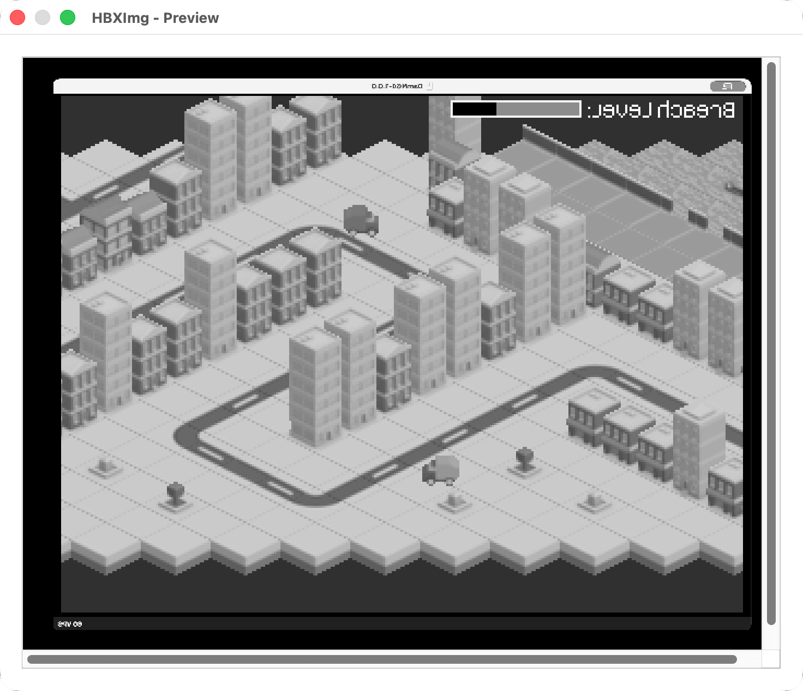
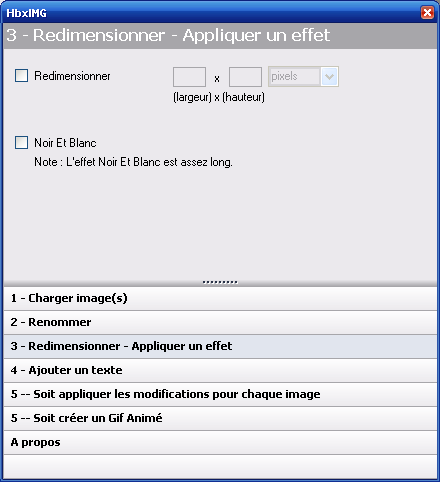
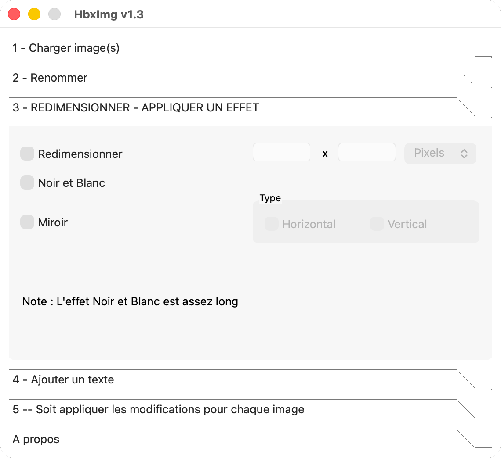
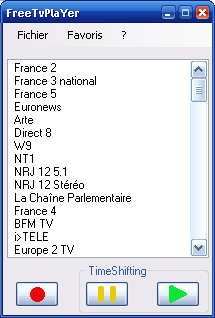
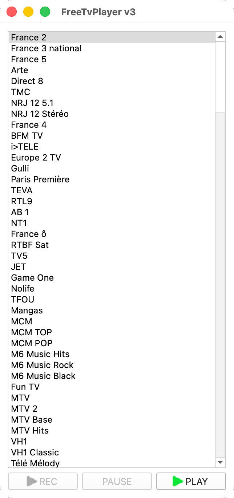

Restoring My 2007 Qt Apps With Codex
July 31, 2026
Voice settings
I recently connected an old 2.5-inch notebook hard drive that had been sitting in storage. Among its contents were two C++ projects I wrote in 2007: HbxImg and FreeTvPlayer.
Both directories contained the usual artifacts of a Linux desktop project from that period: KDevelop files, generated Makefiles, qmake projects, headers, source files, and almost no documentation. I remembered the names, but not what the applications actually did.
Instead of reading through the code myself, I treated them as software archaeology experiments. Could an AI coding agent identify two undocumented applications, reconstruct their behavior, and make them run on a current Apple Silicon Mac without redesigning them?
I used Codex through the macOS app.
Investigating before editing
Before letting Codex change anything, I initialized a Git repository in each directory and committed the recovered files exactly as I found them.
Then I asked for a read-only investigation: determine the purpose of each program, map the architecture and execution flow, reconstruct the interface, identify dependencies and the probable build environment, and cite evidence for every conclusion.
I also asked Codex to label conclusions as proven, inferred, or unknown, so inferred behavior would not be presented as fact.
Only after Codex had reconstructed both applications from the source did I ask it to make them compile on my Mac, staying as close as possible to the originals.
After the investigation, I used the Wayback Machine to find old screenshots of both applications. They suggest that the files recovered from the hard drive are from earlier versions, which explains some of the differences between the archived screenshots and the restored applications.
HbxImg: a batch image editor
HbxImg was a small utility I had written for preparing images for www.halobox.fr.st, a defunct gaming community I used to manage.
It loaded multiple images and applied the same sequence of operations to all of them:
- Resize
- Convert to grayscale
- Mirror
- Add text
- Save in one of several image formats
The interface was a fixed-size Qt QToolBox, constructed entirely in C++. The generated build artifacts revealed the original environment: Qt 4.2.3, qmake, GCC 4.1.2, KDevelop, and 32-bit Linux on Intel.
Codex chose Qt 5 as the shortest bridge from Qt 4. It updated the module imports, removed an obsolete style, configured a macOS application bundle, and added a reproducible build script. It did not replace qmake with CMake, swap out the image library, or redesign the UI.
The main platform incompatibility was image preview. The original code used CImg’s display window, which would have required an additional X11 dependency on macOS. Codex replaced only that boundary: it converted the CImg buffer to a Qt QImage and displayed it in a scrollable Qt dialog.

The restoration also exposed old bugs: empty image lists could crash, the progress bar range was wrong, errors could still produce success messages, and thumbnail code could dereference a missing item. I fixed these defects rather than preserving them.
The result looks recognizably like the 2007 program and can once again load, preview, transform, and save batches of images.


FreeTvPlayer: a simpler way to watch Freebox TV
FreeTvPlayer was a Qt frontend for television service from Free, the French ISP.
At startup, it downloaded Free’s M3U playlist and displayed the available channels. Selecting a channel opened its stream in VLC.
The original code downloaded the playlist by passing a wget command to system(). It parsed entries into a fixed-size array, stopped when it reached a particular channel, constructed another shell command beginning with vlc, and passed that to system() too.
Codex preserved the architecture but repaired the fragile boundaries. QProcess now launches wget and VLC with explicit arguments. Downloads use a temporary file, a timeout, exit-code checks, and keep the previous playlist if an update fails. The parser now reads normal #EXTINF entries instead of depending on the exact channel order from 2007.
The original interface included REC, PAUSE, and PLAY buttons, although only PLAY had ever been implemented. Codex left the unfinished controls visible but disabled, matching their original state.
It also found a settings bug that may have survived since 2007. Two Boolean values were written as adjacent characters, but the reader expected two separate lines. The first read consumed the entire file, so the second setting could not be restored. Following both paths made the mismatch obvious.
FreeTvPlayer now builds and launches, but live television does not work from my current network. The playlist and streams belonged to a specific ISP environment that I no longer have.


Keeping the original design
I did not ask Codex to rewrite these as modern applications. A modernization might have replaced Qt with SwiftUI, qmake with CMake, the fixed layouts with responsive ones, and VLC with embedded playback.
Instead, the restored code keeps the French interfaces, direct Qt widget construction, fixed layouts, original processing order, qmake projects, and VLC as a separate process. Most new code lives at the boundaries where assumptions from 2007 no longer hold: build discovery, application bundles, process launching, data paths, image preview, and error handling.
I focused on preserving visible behavior and changed only the defects and platform assumptions that prevented the applications from working.
What Codex changed
Codex was most useful for understanding the undocumented repositories.
Codex connected UI labels, signals, file formats, shell commands, generated build artifacts, and configuration code across undocumented projects. It moved from explaining each application as a user would experience it to diagnosing specific C++ and Qt compatibility problems, then built and tested the result.
The instructions still mattered. A read-only first pass protected the historical evidence. Requiring citations separated facts from guesses. Asking for restoration rather than modernization kept the applications recognizable.
Both programs now run as native applications on my Apple Silicon Mac. HbxImg is usable again. FreeTvPlayer recreates its original interface, but live playback still depends on the Free ISP network and streams.
Codex reduced the time required to understand the old code and implement the compatibility changes.